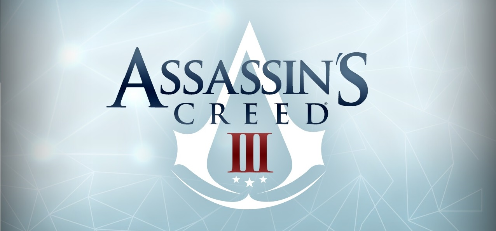

Hello World !
I'm Etienne St-Onge and this is my first personal web page.
After an undergraduate program in Computer Science with specialization in image and signal processing at Université de Sherbrooke, I did a research internship on MRI super-resolution techniques and a project on cortical sulcus registration. Now, I'm a Master's student at the Sherbrooke Connectivity Imaging Lab (SCIL), supervised by Pr. Maxime Descoteaux .I'm improving tractography algorithms to improve brain connectivity comprehension.
Projects
M.Sc. Medical imaging
- TriMeshPy (Triangular Mesh Processing in Python):
TriMeshPy GitHub.
- Surface Visualization :
Mesh loading and visualization of triangular mesh in
Dipy (Diffusion Imaging in python).
- White matter fibers Visualization :
Tractography visualization and colorization in
Dipy
library with
Ph.D. Eleftherios Garyfallidis.
- Imeka : Surface and 3D mesh visualization, C++, MITK, VTK
B.Sc. Computer Science - Image and signal processing.
- Cortex sulcus registration :
Research project with
Pr. Olivier Coulon.
- Warner Bros. Games Montréal :
Tools for the game
Batman Arkham Origin.
- Université de Sherbrooke :
Improving quality of magnetic resonance image (MRI).
- Ubisoft Montréal :
Functions for
Assassin's Creed III
game engine.

Publications
Master Thesis (2016)
Analyse et modélisation de la surface corticale et de l'architecture sous-jacente des axones. (PDF)
Conference:
ISMRM 2015; E. St‐Onge, G. Girard, K. Whittingstall, M. Descoteaux; Surface tracking from the cortical mesh complements diffusion MRI fiber tracking near the cortex.